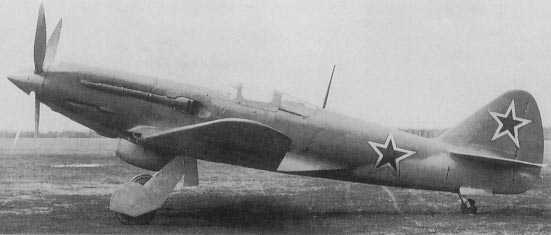

«Наша авиация по качеству превосходит немецкую авиацию,
а наши славные летчики покрыли себя славой бесстрашных бойцов»
И. СТАЛИН
Авиационные конструкторы СССР
В конце 30-х в СССР была создана мощная научно-производственная база, способная проектировать и производить большое количество машин разных типов. В 1940 году на авиацию было истрачено 40% советского военного бюджета, а общее число авиазаводов возросло на 75%. В результате, в июне 1941 года производственная база была в полтора раза больше немецкой.
До сих пор нет единого мнения о количественном составе советских ВВС на момент начала войны.
Называются цифры по общему количеству боевых самолетов 17500-20000, из них на западной границе находился 9261 самолет (В.С. Шумихин "Советская военная авиация 1917-1941").
в Ленинградском ВО (24 авиаполка): 1270
в Прибалтийском ВО (19 авиаполков): 1140
в Западном особом ВО (29 авиаполков): более 1500
в Киевском особом ВО (32 авиаполка): 1672
в Одесском ВО (15 авиаполков): 950
в Дальнебомбардировочной авиации: 1346
в ВВС Балтийского, Черноморского и северного флотов: 1338
Из общего числа боевых самолетов 53,4% были истребителями, 41,2% - бомбардировщиками, 3,2% - самолетами-разведчиками и 0,2% - штурмовиками. Около 80% всех самолетов относились к более старым типам (И-15, И-16, СБ, ТБ-3, ДБ-3 и Р-5). С появлением новых самолетов в начале 1941 года, общее число типов машин составило 27, из которых 7 являлись модернизированными версиями (типов бомб насчитывалось 86). Все это многообразие типов затрудняло снабжение и усложняло организацию и применение воздушные частей.
Новые истребители построили, не так уж и мало (1309 МиГ-1 и МиГ-3, 399 Як-1 и 322 Як-3, всего 2030), но они еще не были в достаточной степени освоены личным составом.
Сравнение ВВС и Люфтваффе на 22 июня не может быть сделано, исходя просто из числа машин, что означало бы более чем двукратное превосходство ВВС. Следует учитывать необеспеченность экипажами и небоеспособность части самолетов. Наиболее важным было немецкое превосходство в качестве самолетов и подготовке экипажей. Немецкие самолеты превосходили наши с точки зрения летных характеристик и огневой мощи. Обширный, почти двухлетний боевой опыт немецких пилотов предрешил большинство воздушных поединков. Качественное превосходство немцев дополнялось организационными преимуществами. В то время как советские авиационные части были рассредоточены по военным округам, армиям и войсковым частям, и не могли использоваться сконцентрированно, как одно целое, немецкие самолеты были сведены в воздушные флоты, каждый из которых насчитывал до 1000 машин. В результате ВВС действовали раздробленно, а Люфтваффе концентрировались для ударов по ключевым секторам и в наиболее важный момент.
На 31 декабря 1941 г. боевые потери ВВС РККА составили 21200 самолетов.

МиГ-7
Признавая мужество и доблесть советских летчиков того времени, преклоняясь перед их подвигом и самопожертвованием, нельзя не признать тот факт, что СССР удалось возродить свои ВВС после катастрофы 1941 года исключительно за счет громадных людских ресурсов, передислокации почти всей авиационной промышленности в районы недосягаемые для немецкой авиации и тем, что в первые месяцы войны ВВС потеряли в основном технику, а не летный и технический составы. Именно они и стали основой возрождаемых ВВС.
В 1941 году советская авиапромышленность передала фронту 7081 истребитель, а союзники поставили 730 истребителей.
На 1 января 1942 года на вооружении ВВС РККА состояло 12000 самолетов. из них 5400 боевых.
В первой половине 1942 г. в боевом составе истребительной авиации были следующие типы самолетов отечественного производства: И-153 (18% от общего количества), И-16 (28%), МиГ-3 (23,9%), ЛаГГ-3 (11,5%), Як-1 (9,2%).
Начиная с января 1942 г. выпуск авиатехники неуклонно возрастал. Если в первом квартале среднемесячное производство боевых самолетов составлял 1100 машин, то во втором квартале — 1700. Всего за первое полугодие было выпущено 9744 самолета, из них 8268 боевых. Выпуск самолетов во втором полугодии выглядел следующим образом: июль — 2224 (всего)/1835 (боевых), август - 2492/2098, сентябрь - 2672/ 2286, октябрь — 2839/2462, ноябрь -2634/2268, декабрь - 2831/2464.
В течение 1942 г. советская авиапромышленность выпустила 9918 истребителей, а немцкая — 5515. В 1942 г. в рамках ленд-лиза союзники поставили советским ВВС 1815 истребителей.
В 1943 г. в рамках ленд-лиза союзники поставили 4569 истребителей, а советская авиапромышленность передала фронту 14627 истребителей.
На 1 января 1942 г. советские ВВС имели в своем составе 12000 самолетов, в том числе в действующей армии — 5400, на 1 января 1943 г. - 21900/12300, на 1 января 1944 г. - 32500/13400.
В конце 1944 г. в составе ВВС имелось 16 воздушных армий, в которые входили 37 авиакорпусов и 170 авиадивизий (63 истребительных, 50 штурмовых, 55 бомбардировочных и 2 смешанных). Всего за годы войны в СССР были созданы 18 воздушных армий. В 1945 г. в составе ВВС РККА существовали 15 воздушных армий, из которых три (9, 10 и 12-я) находились на Дальнем Востоке, а 7-я воздушная армия — в Резерве Ставки Верховного Главнокомандования.
По советским данным, на 1 января 1944 г. в действующей армии находилось 10200 (из них 8500 так называемых новых типов) боевых самолетов, на 1 июля 1944 г. - 12900 (11800), на 1 января 1945 г. - 14700 (14500). В начале 1945 г. Советский Союз имел 22600 боевых самолетов.
На 9 мая 1945 г. в СССР насчитывалось 47300 боевых самолетов, из них 9700 бомбардировщиков, 10100 штурмовиков, 27500 истребителей.
По советским данным, в 1945 г. боевые потери советской авиации (за четыре месяца войны) составили 4100 боевых самолетов, таким образом, среднемесячные потери равнялись 1025 самолетам.